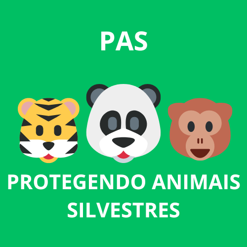
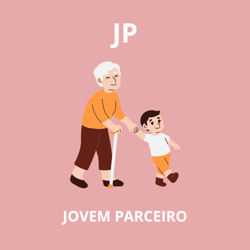
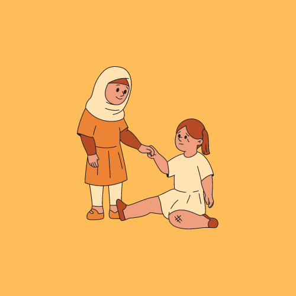

Pesquisar Ongs
-

Protegendo Animais Silvestres
@PASOFCONG Animal
A Ong PAS (Protegendo Animais Silvestres), tem como objetivo combater os crimes contra animais silvestres como o trafico deles, que tal dar uma forcinha para esses parceiros da natureza ?
-

Jovem Parceiro
@JovemParceiroofcONG Apoio
Jovens Parceiros, ajudando idosos os fazendo se sentir menos sozinhos os levando para atividades divertidas e passeios, demonstre seu apoio a velha guarda e colabore com esses jovens parceiros!
-

Plantando Bons Sonhos
@PBSOFCONG Ambiental
A Plantando Bons Sonhos tem como objetivo educar e incetivar o cuidado do meio ambiente por meio da crianças, sempre mostrando a elas a importancia da saude do nosso grande planeta azul, o que acha de dar uma olhada nas atividades dessa galera mais de perto e quem sabe até plantar uma mudinha.
-

Cuidando De Nos
@CNDOFCONG Apoio
Mulheres unidas com um unico objetivo, uma acolher a outra, a Ong CND (Cuidando De Nos) tem como objetivo acolher todas as mulheres vitimas de abusos fisicos e psicologicos, fornecendo atendimento psicologico com profissional formados e preparados para todo tipo de caso, também auxiliando em denuncias quando necessario, o machismo e a violencia contra a mulher precisa de um fim! Todos precisam entrar nesta luta!